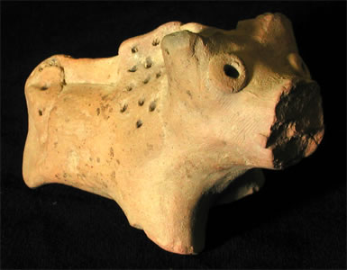

Excavations begin at Harappa and Mohenjo-daroIn 1920, Rai Bahadur Daya Ram Sahni began excavating at Harappa. In 1921, Rakal Das Banerji began excavating at Mohenjo-daro. When the objects found during these excavations were compared, it became clear that they came from a common culture. 
These excavations continued throughout the 1920s and 1930s. During this time, archaeologists uncovered streets and houses in the cities and found many different types of objects. From this evidence, they were able to begin to piece together ideas about the people who had lived in these cities thousands of years ago. |